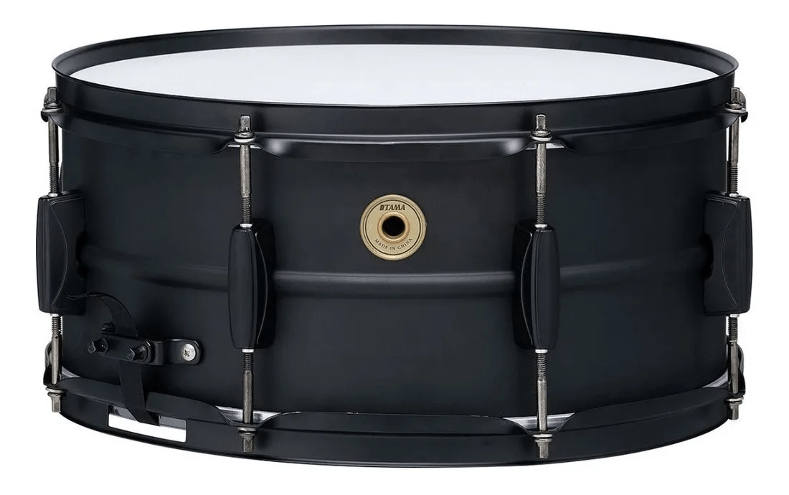
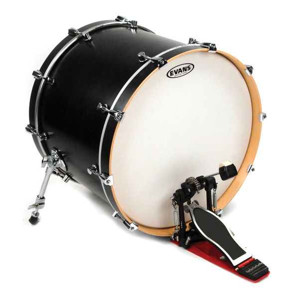
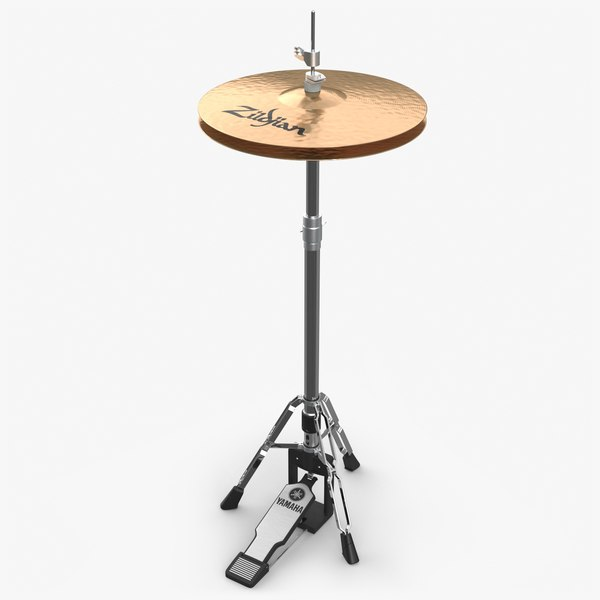
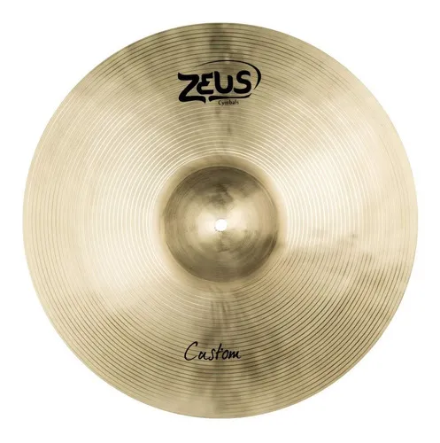
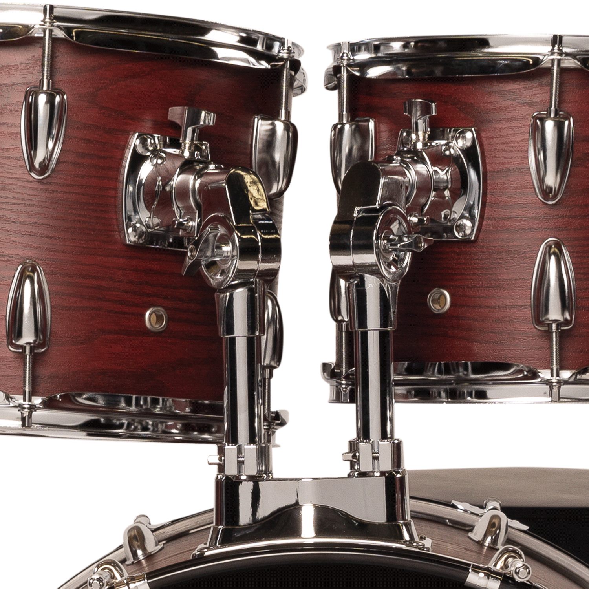
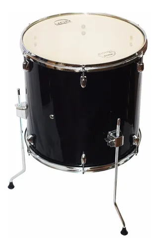
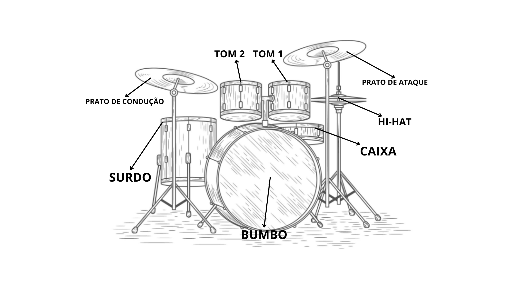

A Bateria
E aí! Deixa eu te apresentar a bateria, que é aquele instrumento que parece um mini parque de diversões cheio
de tambores e pratos. Se você já viu alguém tocando bateria, sabe que é um espetáculo de coordenação — mãos
e pés batendo em várias partes ao mesmo tempo, parecendo até mágica.
Mas, na real, a bateria é um conjunto de peças, e cada uma tem um som e função diferente. Vou te mostrar as
principais pra você sacar melhor
- Caixa (Snare Drum);

É o tambor mais usado na bateria, fica no meio, entre as pernas.
Faz um som seco, estalado, tipo um “tac!” bem marcante.
Costuma marcar o tempo e dar aquele “punch” que você sente no ritmo.
- Bumbo (Kick Drum);

É o tambor grande no chão que você toca com o pé.
Faz um som grave e forte, tipo um “boom!” que dá peso à música.
Ele é a base da batida e dá aquela sensação de impacto.
- Hi-hat;

São dois pratos empilhados, controlados com o pé.
Podem ser tocados fechados, abertos ou batidos com baqueta.
Criam sons de “tss” e ajudam a marcar o tempo e dar “groove”.
- Prato de Ataque (Crash);

É o prato que você bate quando quer dar ênfase ou fazer uma transição.
Tem som explosivo e brilhante, tipo um “shhhPA!”.
Usado pra destacar momentos importantes da música.
- Tom 1 e Tom 2;

É São os tambores médios que ficam na parte de cima da bateria.
Têm sons diferentes entre si, geralmente do mais agudo pro médio.
Usados em viradas e variações rítmicas durante a música.
- Surdo (Floor Tom);

É o tom maior que fica ao lado direito do baterista (se for destro).
Tem som mais grave e encorpado, tipo um “tum” profundo.
Dá peso e finalização nas viradas ou em partes mais fortes.
Por que tocar bateria?
🎯 1. É um treino físico
Tocar bateria exige coordenação motora fina e grossa ao mesmo tempo. Braço vai num ritmo, perna em
outro e mente em outro também.
🧠 + 🏋️ = cérebro e corpo trabalhando juntos como um squad de elite.
🧘♂️ 2. É mindfulness versão percussiva
Você não consegue tocar bateria pensando no que vai jantar.
Ali, só existe o momento presente: você, os tambores e o compasso.
No dia a dia: isso reduz ansiedade e estresse, o que te ajuda a lidar com pressão sem tilt mental.
🧠 3. Turbo no cérebro
Pesquisas mostram que bateristas têm maior conectividade entre os hemisférios do cérebro. Tipo,
literalmente o Wi-Fi interno deles é melhor.
No dia a dia: isso melhora raciocínio lógico, criatividade e até resolução de problemas — ideal pra quem
tá em área tech ou precisa pensar fora da caixinha.
🤹 4. Coordenação & multitarefa: modo God
Mãos e pés fazendo funções diferentes, tudo sincronizado. É tipo ser um octopus com senso de ritmo.
No dia a dia: te torna mais eficaz em multitarefas — útil pra quando você tá codando, respondendo
e-mails e mandando meme no grupo da firma ao mesmo tempo.
🎭 5. Expressão emocional
Às vezes não dá pra colocar em palavras. Mas dá pra socar uma caixa com baqueta, haha!. 😤
No dia a dia: ajuda a processar emoções, tipo um desabafo sem DR. Isso aumenta sua inteligência
emocional (e evita surtos em reuniões).
⚡Contudo;
Tocar bateria é ginástica pro corpo, massagem pro cérebro e exorcismo pra alma. Se quiser render mais,
estressar menos e ainda parecer badass, mete baqueta que é sucesso.
- Setup (Bateria) Descrita:

 Voltar
Voltar